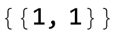

Primer reševanje maturitetne pole iz matematike s programom Wolfram Mathematica
Spomladanski izpitni rok 2015, višja raven, izpitna pola 2
Naloga 2
Dana je racionalna funkcija f:
Naloga 2.1.
V dani koordinatni sistem narišite krivuljo .
Zapišite predpis inverzne funkcije  .
.

Določite definicijsko območje funkcije (realna os brez polov).

Naloga 2.2.
Naj premica seka krivuljo  . Določite enačbo, ki ji zadoščata abscisi presečišč.
. Določite enačbo, ki ji zadoščata abscisi presečišč.
Naloga 2.3.
Izračunajte, za katere vrednosti parametra je premica  tangentna na krivuljo
tangentna na krivuljo  .
.
Naloga 2.4.
Narišite krivulje , ,,, .


Izračunajte ploščino lika, ki ga določata abscisna os in krivulja .